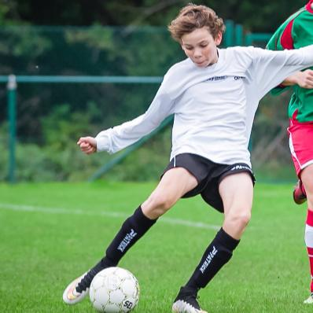

<!DOCTYPE html>
<html>
<head>
<style>
body {
    background-image: url("voetbalstadium.jpg"); 
}
</style>
</head>

</html>

<html>
<head>
<style>
ul {
    list-style-type: none;
    margin: 0;
    padding: 0;
    overflow: hidden;
    background-color: #333;
}

li {
    float: left;
}

li a {
    display: block;
    color: white;
    text-align: center;
    padding: 14px 16px;
    text-decoration: none;
}

li a:hover:not(.active) {
    background-color: #111;
}

.active {
    background-color: #4169e1;
}
</style>
</head>
<body>

<ul>
  <li><a href="Website.html">Home</a></li>
  <li><a href="Informatie.html">Informatie</a></li>
  <li><a class="active" href="Hobbys.html">Hobby's</a></li>
  <li><a href="Humor.html">Humor</a></li>
  <li><a href="toekomst.html">Toekomst</a></li>
  <li><a href="Contact.html">Contact</a></li>
</ul>

</body>
</html>


<body>
<div>
<h1>Hobby's</h1>
<head>
<link rel="stylesheet" type="text/css" href="mystyle.css">
</head>
<p>. </p>
<p>. </p>
<p>. </p>
<p>Als hobby speel ik voetbal. Ik heb al veel andere sporten beoefend (bv.tennis, atletiek en tennis) maar voetbal blijf ik de leukste sport vinden. Ik doe deze sport ook al 8 jaar en heb al bij een aantal clubs gespeeld.
 Eigenlijk was ik niet van plan om te veranderen van club toen ik bij Sparta Petegem voetbalde maar omdat de club geen nieuwe ploeg wou aanmaken en omdat we met te veel waren, konden er veel spelers
  niet meer blijven en moesten we allemaal een nieuwe club gaan zoeken. Nu speel ik bij Nokere-Kruishoutem en op het veld sta ik meestal linksvoor maar het kan ook eens gebeuren dat ik op 
het middenveld sta.  </p>
</div>

</body>
</html>

<html>
<head>
<meta name="Foto" content="width=device-width, initial-scale=1">
<style>
img {
    display: block;
    margin-left: auto;
    margin-right: auto;
}
</style>
</head>
<body>

</body>

<html>
<head>
</head>
<style>
table, th, td {
	color: white;
    border: 2px solid white;
    border-collapse: collapse;
}
th, td {
    padding: 5px;
}
</style>
</head>
<body>

<table style="width:100%">
  <tr>
    <th>Clubs</th>
    <th>Aantal Jaar</th> 
    
  </tr>
  <tr>
    <td>Lovendegem</td>
    <td>1</td>
    
  </tr>
  <tr>
    <td>Sparta Petegem</td>
    <td>5</td>
    
  </tr>
  <tr>
    <td>Nokere Kruishoutem</td>
    <td>2</td>
    
  </tr>
</table>

</body>
</html>


